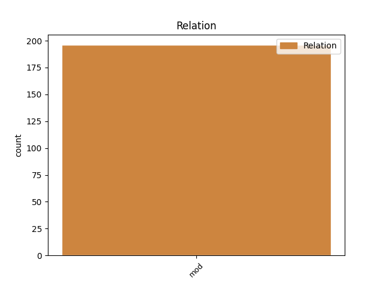
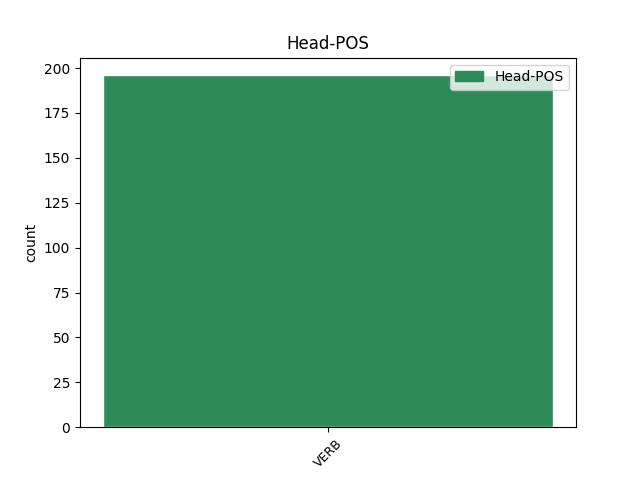
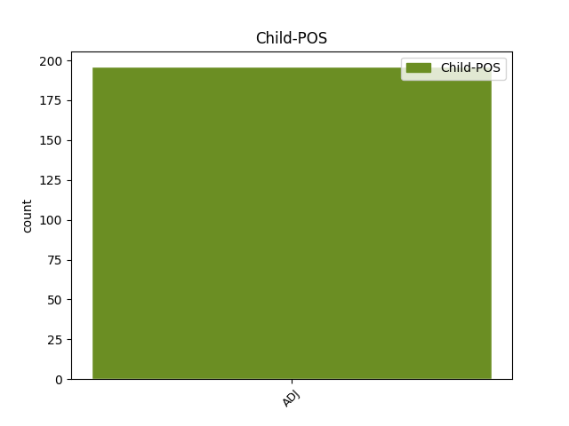

Distribution of features within this leaf



Agreement Rules sorted by frequency.
- When the dependent token is the modifer(mod) of the head token, and the head token is VERB and the dependent token is ADJ.
1 εἴ _ _ _ _ 0 _ _ _
2 τις _ _ _ _ 0 _ _ _
3 προσκυνεῖ _ _ _ _ 0 _ _ _
4 τὸ _ _ _ _ 0 _ _ _
5 θηρίον _ _ _ _ 0 _ _ _
6 καὶ _ _ _ _ 0 _ _ _
7 τὴν _ _ _ _ 0 _ _ _
8 εἰκόνα _ _ _ _ 0 _ _ _
9 αὐτοῦ _ _ _ _ 0 _ _ _
10 καὶ _ _ _ _ 0 _ _ _
11 λαμβάνει _ _ _ _ 0 _ _ _
12 χάραγμα _ _ _ _ 0 _ _ _
13 ἐπὶ _ _ _ _ 0 _ _ _
14 τοῦ _ _ _ _ 0 _ _ _
15 μετώπου _ _ _ _ 0 _ _ _
16 αὐτοῦ _ _ _ _ 0 _ _ _
17 ἢ _ _ _ _ 0 _ _ _
18 ἐπὶ _ _ _ _ 0 _ _ _
19 τὴν _ _ _ _ 0 _ _ _
20 χεῖρα _ _ _ _ 0 _ _ _
21 αὐτοῦ _ _ _ _ 0 _ _ _
22 καὶ _ _ _ _ 0 _ _ _
23 αὐτὸς _ _ _ _ 0 _ _ _
24 πίεται _ _ _ _ 0 _ _ _
25 ἐκ _ _ _ _ 0 _ _ _
26 τοῦ _ _ _ _ 0 _ _ _
27 οἴνου _ _ _ _ 0 _ _ _
28 τοῦ _ _ _ _ 0 _ _ _
29 θυμοῦ _ _ _ _ 0 _ _ _
30 τοῦ _ _ _ _ 0 _ _ _
31 θεοῦ _ _ _ _ 0 _ _ _
32 τοῦ _ _ _ _ 0 _ _ _
33 κεκερασμένου κεράννυμι VERB V- Aspect=Perf|Case=Gen|Gender=Masc|Number=Sing|Tense=Past|VerbForm=Part|Voice=Pass 0 _ _ _
34 ἀκράτου ἄκρατος ADJ A- Case=Gen|Degree=Pos|Gender=Masc|Number=Sing 33 mod _ ref=REV_14.10
35 ἐν _ _ _ _ 0 _ _ _
36 τῷ _ _ _ _ 0 _ _ _
37 ποτηρίῳ _ _ _ _ 0 _ _ _
38 τῆς _ _ _ _ 0 _ _ _
39 ὀργῆς _ _ _ _ 0 _ _ _
40 αὐτοῦ _ _ _ _ 0 _ _ _
41 καὶ _ _ _ _ 0 _ _ _
42 βασανισθήσεται _ _ _ _ 0 _ _ _
43 ἐν _ _ _ _ 0 _ _ _
44 πυρὶ _ _ _ _ 0 _ _ _
45 καὶ _ _ _ _ 0 _ _ _
46 θείῳ _ _ _ _ 0 _ _ _
47 ἐνώπιον _ _ _ _ 0 _ _ _
48 ἀγγέλων _ _ _ _ 0 _ _ _
49 ἁγίων _ _ _ _ 0 _ _ _
50 καὶ _ _ _ _ 0 _ _ _
51 ἐνώπιον _ _ _ _ 0 _ _ _
52 τοῦ _ _ _ _ 0 _ _ _
53 ἀρνίου _ _ _ _ 0 _ _ _
Disagree Examples:
1 οὕτω _ _ _ _ 0 _ _ _
2 δὴ _ _ _ _ 0 _ _ _
3 ἁρπάσαντος _ _ _ _ 0 _ _ _
4 αὐτοῦ _ _ _ _ 0 _ _ _
5 Ἑλένην _ _ _ _ 0 _ _ _
6 τοῖσι _ _ _ _ 0 _ _ _
7 Ἕλλησι _ _ _ _ 0 _ _ _
8 δόξαι _ _ _ _ 0 _ _ _
9 πρῶτὸν πρῶτος ADJ Mo Case=Acc|Gender=Neut|Number=Sing 10 mod _ ref=1.3.2
10 πέμψαντας πέμπω VERB V- Aspect=Perf|Case=Acc|Gender=Masc|Number=Plur|Tense=Past|VerbForm=Part|Voice=Act 0 _ _ _
11 ἀγγέλους _ _ _ _ 0 _ _ _
12 ἀπαιτέειν _ _ _ _ 0 _ _ _
13 τε _ _ _ _ 0 _ _ _
14 Ἑλένην _ _ _ _ 0 _ _ _
15 καὶ _ _ _ _ 0 _ _ _
16 δίκας _ _ _ _ 0 _ _ _
17 τῆς _ _ _ _ 0 _ _ _
18 ἁρπαγῆς _ _ _ _ 0 _ _ _
19 αἰτέειν _ _ _ _ 0 _ _ _
1 τὸν _ _ _ _ 0 _ _ _
2 δὲ _ _ _ _ 0 _ _ _
3 οἶδα _ _ _ _ 0 _ _ _
4 αὐτὸς _ _ _ _ 0 _ _ _
5 πρῶτον πρῶτος ADJ Mo Case=Acc|Gender=Neut|Number=Sing 6 mod _ ref=1.5.3
6 ὑπάρξαντα ὑπάρχω VERB V- Aspect=Perf|Case=Acc|Gender=Masc|Number=Sing|Tense=Past|VerbForm=Part|Voice=Act 0 _ _ _
7 ἀδίκων _ _ _ _ 0 _ _ _
8 ἔργων _ _ _ _ 0 _ _ _
9 ἐς _ _ _ _ 0 _ _ _
10 τοὺς _ _ _ _ 0 _ _ _
11 Ἕλληνας _ _ _ _ 0 _ _ _
12 τοῦτον _ _ _ _ 0 _ _ _
13 σημήνας _ _ _ _ 0 _ _ _
14 προβήσομαι _ _ _ _ 0 _ _ _
15 ἐς _ _ _ _ 0 _ _ _
16 τὸ _ _ _ _ 0 _ _ _
17 πρόσω _ _ _ _ 0 _ _ _
18 τοῦ _ _ _ _ 0 _ _ _
19 λόγου _ _ _ _ 0 _ _ _
20 ὁμοίως _ _ _ _ 0 _ _ _
21 σμικρὰ _ _ _ _ 0 _ _ _
22 καὶ _ _ _ _ 0 _ _ _
23 μεγάλα _ _ _ _ 0 _ _ _
24 ἄστεα _ _ _ _ 0 _ _ _
25 ἀνθρώπων _ _ _ _ 0 _ _ _
26 ἐπεξιών _ _ _ _ 0 _ _ _
1 τὴν _ _ _ _ 0 _ _ _
2 ἀνθρωπηίην _ _ _ _ 0 _ _ _
3 ὦν _ _ _ _ 0 _ _ _
4 ἐπιστάμενος _ _ _ _ 0 _ _ _
5 εὐδαιμονίην _ _ _ _ 0 _ _ _
6 οὐδαμὰ οὐδαμός ADJ A- Case=Acc|Degree=Pos|Gender=Neut|Number=Plur 10 mod _ ref=1.5.4
7 ἐν _ _ _ _ 0 _ _ _
8 τῷ _ _ _ _ 0 _ _ _
9 αὐτῷ _ _ _ _ 0 _ _ _
10 μένουσαν μένω VERB V- Case=Acc|Gender=Fem|Number=Sing|Tense=Pres|VerbForm=Part|Voice=Act 0 _ _ _
11 ἐπιμνήσομαι _ _ _ _ 0 _ _ _
12 ἀμφοτέρων _ _ _ _ 0 _ _ _
13 ὁμοίως _ _ _ _ 0 _ _ _
1 οἱ _ _ _ _ 0 _ _ _
2 δὲ _ _ _ _ 0 _ _ _
3 πρότερον πρότερος ADJ A- Case=Acc|Degree=Pos|Gender=Neut|Number=Sing 5 mod _ ref=1.7.3
4 Ἄγρωνος _ _ _ _ 0 _ _ _
5 βασιλεύσαντες βασιλεύω VERB V- Aspect=Perf|Case=Nom|Gender=Masc|Number=Plur|Tense=Past|VerbForm=Part|Voice=Act 0 _ _ _
6 ταύτης _ _ _ _ 0 _ _ _
7 τῆς _ _ _ _ 0 _ _ _
8 χώρης _ _ _ _ 0 _ _ _
9 ἦσαν _ _ _ _ 0 _ _ _
10 ἀπόγονοὶ _ _ _ _ 0 _ _ _
11 Λυδοῦ _ _ _ _ 0 _ _ _
12 τοῦ _ _ _ _ 0 _ _ _
13 Ἄτυος _ _ _ _ 0 _ _ _
14 ἀπ’ _ _ _ _ 0 _ _ _
15 ὅτευ _ _ _ _ 0 _ _ _
16 ὁ _ _ _ _ 0 _ _ _
17 δῆμος _ _ _ _ 0 _ _ _
18 Λύδιος _ _ _ _ 0 _ _ _
19 ἐκλήθη _ _ _ _ 0 _ _ _
20 ὁ _ _ _ _ 0 _ _ _
21 πᾶς _ _ _ _ 0 _ _ _
22 οὗτος _ _ _ _ 0 _ _ _
23 πρότερον _ _ _ _ 0 _ _ _
24 Μηίων _ _ _ _ 0 _ _ _
25 καλεόμενος _ _ _ _ 0 _ _ _
1 οἱ _ _ _ _ 0 _ _ _
2 δὲ _ _ _ _ 0 _ _ _
3 πρότερον _ _ _ _ 0 _ _ _
4 Ἄγρωνος _ _ _ _ 0 _ _ _
5 βασιλεύσαντες _ _ _ _ 0 _ _ _
6 ταύτης _ _ _ _ 0 _ _ _
7 τῆς _ _ _ _ 0 _ _ _
8 χώρης _ _ _ _ 0 _ _ _
9 ἦσαν _ _ _ _ 0 _ _ _
10 ἀπόγονοὶ _ _ _ _ 0 _ _ _
11 Λυδοῦ _ _ _ _ 0 _ _ _
12 τοῦ _ _ _ _ 0 _ _ _
13 Ἄτυος _ _ _ _ 0 _ _ _
14 ἀπ’ _ _ _ _ 0 _ _ _
15 ὅτευ _ _ _ _ 0 _ _ _
16 ὁ _ _ _ _ 0 _ _ _
17 δῆμος _ _ _ _ 0 _ _ _
18 Λύδιος _ _ _ _ 0 _ _ _
19 ἐκλήθη _ _ _ _ 0 _ _ _
20 ὁ _ _ _ _ 0 _ _ _
21 πᾶς _ _ _ _ 0 _ _ _
22 οὗτος _ _ _ _ 0 _ _ _
23 πρότερον πρότερος ADJ A- Case=Acc|Degree=Pos|Gender=Neut|Number=Sing 25 mod _ ref=1.7.3
24 Μηίων _ _ _ _ 0 _ _ _
25 καλεόμενος καλέω VERB V- Case=Nom|Gender=Masc|Number=Sing|Tense=Pres|VerbForm=Part|Voice=Pass 0 _ _ _